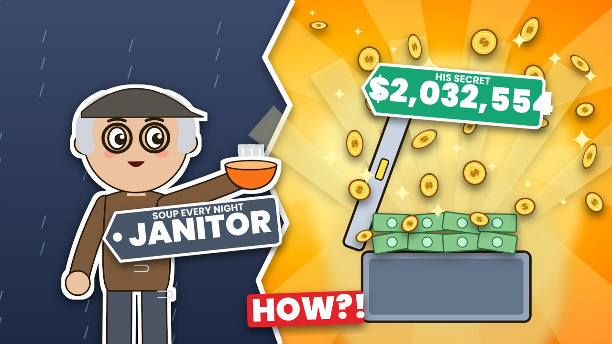
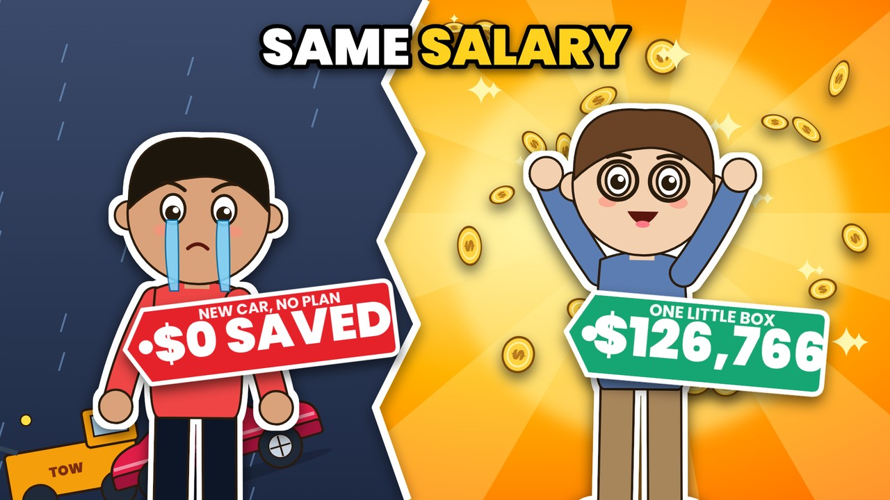

Channel Risk Audit: Coin Theory
November 24, 2026 · checked against YouTube's channel monetization policies (live page, read today) · guidelines check only, run without TubeLab
6 of our 48 public or scheduled videos (12%) reuse the same script template, and 5 of them are among the newest 10: three "same money, different choices, the patient saver wins" stories in one week, and three market-drop videos in a row with the same chapters and the same passages.
Higher is riskier. The highest signal sets each score. A low score means no signal was found, not that the channel is safe.
Termination risk is not scored. It rests on what happened to similar channels, and that needs TubeLab: terminated channels vanish from YouTube and ad status is not public. The demonetization score rests on the guidelines alone.
Signals
Demonetization
Termination
Guidelines check
What was checked: all 48 public or scheduled uploads (titles, descriptions), 9 scripts read in full or by chapter (ep10_stocks, ep11_vix, ep12_week, ep09_gold, ep13_groceries, stories s01, s02, s03, and Shorts sx01, sx05, sx12), the live thumbnails of the videos cited, the live About text and our production docs. Two private, unscheduled duplicates (a second "$42 Billion Pulled From One Bank" Short and the first "Same Salary" cut) are left out of the counts. The section "Quality principles for kids and family content" was skipped: the channel is set to not made for kids.
Generic or Repetitive Content60
Stories. The three story videos scheduled for Nov 25, 27 and 29 follow one plot: people get the same money or the same job, one spends, one saves or invests, the market crashes (2000, 2008, 2020) and the patient one is rewarded. Each opens the same way ("I'm Penny. These people are made up. Every number is real.") and re-uses the same entries: a "money tree" you must not chop, buying during crashes, credit card minimums, and compounding where most of the money comes at the end. The names and places could be swapped and the scripts would still work. The Shorts started this: "Same $200 a Month" (sx01) and "$5 a Day for 30 Years" (sx05) are the same jar-versus-7% calculation, and story 3 repeats sx05's "the last ten years add more than the first twenty" and its closing line "Time does the heavy lifting". The hen Short (sx12) is not counted: its outcome flips when bird flu hits.
Market updates. "Stocks Fell 6 Days in a Row" (Nov 20), "Fear Index Hits 37" (Nov 20) and "The Nasdaq's Worst Week Since 2020" (Nov 21) cover one sell-off with the same chapter list (what happened, definitions, why, what history says, recent drops, best and worst days, what to watch next, what it means for you, recap). ep11 repeats ep10's entries: the best-days-near-worst-days point, the same watch list (10-year yield, the Fed's December meeting) and the same "emergency fund, keep investing through a 401(k)" advice. Our production rule causes this: DAILY_PRODUCTION.md says to write each episode "using the newest episode as the template (ep10_stocks.py)". The three thumbnails share one layout too (a scared Penny on the left, rays, a chart on the right, a two-word headline).
Count. 6 of 48 videos run into it (12%, more than two and over a tenth: 60): sx05, ep11, ep12, s01, s02 (the "One Has $126,766" cut) and s03. The newest ten have 5 (50%), the older 38 have 1 (3%), so the problem is growing and the score was not lowered.
Titles (watch, not counted). The shape "[number claim]. [short question or Here's why]" ("Your Groceries Cost 32% More. Why?") is on 22 of 48 videos (46%), just under the half that would count. It is on 11 of 16 long videos (69%) and 6 of the newest 10. A few more and it counts.

The Poorest Man in Town Left $2 Million. How? · scheduled Nov 29
Same Salary. 10 Years Later, One Has $126,766. · scheduled Nov 27 Fear Index Hits 37. What Happens Next? · 72 views, 1.3x median, Nov 20
Fear Index Hits 37. What Happens Next? · 72 views, 1.3x median, Nov 20
"Videos where characters are put in the same situation over and over again with the same outcome (i.e., using a highly similar storyline template across multiple videos)"
"That means channels where content feels interchangeable from video to video are not allowed to monetize."
"AI-generated content made with generic or unoriginal templates giving the impression of mass production without adding the creator’s original, authentic insights or perspective"
What is fine, from the same section: "Same intro and outro for your videos, but the bulk of your content is different" and "a series following a set of characters across episodes ... but in which each video has a distinct storyline, focus, or concept". Penny as a recurring host and our sourced numbers are not the problem. The same plot and the same passages are.
Fix: Give each story its own plot, lesson and ending, including stories where saving is not the answer or the "safe" choice wins. Write each market video from a blank outline around the one new question of the day, and skip a daily update when the story has not really changed. Never copy a passage from an earlier script. Rotate title shapes and thumbnail layouts.
AI Personas Related to Sensitive Topics0
Watch closely. Finance is one of the named topics, and every long video is voiced by Penny with synthetic speech and ends with a "What it means for you" chapter (keep an emergency fund, don't sell in a panic, keep buying through a 401(k)). It does not run into the policy as written: Penny is plainly a cartoon coin, never claims to be a human expert, the stories say the people are made up, and every video says "education only, not financial advice". No video counts, so the score is 0. But nothing on the channel shows a real person who stands behind that guidance, so a reviewer may read Penny as the policy's example below.
"This includes any content that presents itself as a human expert providing advice to viewers on topics such as health, legal issues, finances, or politics."
"AI-generated podcast hosts offering financial guidance, investment tips, or wealth management advice"
Reused content0
Almost everything is our own code-drawn animation over our own scripts, built from numbers we download and recompute (FRED, BLS, Yahoo). One Short, "$100 in 1962 = $1,112 Today (Real 1962 Footage)" (1,204 views), uses public-domain Prelinger Archives footage, with our narration, data and effects on top. One video is below the threshold, so the score is 0.
Unsatisfying or Off-putting Content0
Each video has a clear storyline and sourced numbers. Nothing is designed only to shock. Three fear-led market titles in two days ("Is a Crash Coming?", "Fear Index Hits 37", "Worst Week Since 2020") are worth watching, but the videos themselves are calm and data-led. Videos that feel interchangeable are counted under Generic or Repetitive Content above, not twice. The page's own allowed example fits our method: "If you use automated tools or templates to help create your content, the final product must still demonstrate your creative vision and provide educational or entertainment value."
What happened to similar channels
Not checked. This run had no TubeLab access (paid, not connected), and without it there is no evidence about similar channels: terminated channels vanish from YouTube and ad status is not public. Neither score includes this signal.
What already shows real people behind the channel
Nothing yet. No real presenter appears on camera in any video, and the live About text names only the mascot: "Hosted by Penny, a coin who's seen a lot of prices change." It does not say who researches, writes and checks the videos. Reviewers read the About text: the policy lists "Channel’s “About” section" among what they may check, and says "if we cannot clearly tell that you made the content, monetization may be removed from your entire channel."
Actions to reduce risk
- Give every story video its own plot and ending
Three stories in one week (Nov 25, 27, 29) use the same "same money, the patient saver wins" plot and the same lines, which is the policy's "same situation over and over again with the same outcome". - Write each market video from a blank outline, not from the last episode
ep10, ep11 and ep12 share chapters and passages because the daily routine copies the newest episode file. Make one update per real new development and drop passages already used. - Add a real presenter on camera and name who makes the videos in the About text
Nothing shows a person behind the channel. A short video presenting the channel and how its videos are made, plus an About line naming the maker, also shows a human stands behind the money guidance Penny gives. - Try new title formulas and thumbnail layouts
"[Number claim]. [Short question]?" is on 11 of 16 long videos (69%) and 6 of the newest 10, and the three market videos share one thumbnail layout. That is close to the point where titles alone count as repetitive.